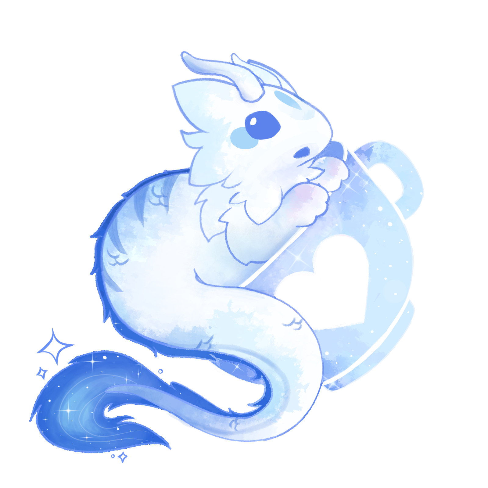

Hi! I am Skye (she/they) a smol art and dev student that likes messing around with codes and computers! Welcome to my star-studded virtual home, safely tucked away in the coziest fringes of the great web beneath the deepest stellar ocean. I'm the person behind this site! just like everyone always says, this is my own little corner of the internet. I use this space for just about anything, though i mostly use it as a digital journal, of both my personal life and interests
This site contains javascript, iframes, and sound in autoplay! While made for desktop browsing, some pages on the site should be mobile friendly more or less. However, the intended viewing size is 1080px on desktop! if you are returning, please CTRL+F5 or delete your browser cache if anything looks broken! Please note that my site is still a work in progress, so it may still have some bugs. Also, autoplay will not work the same on iOS devices
quick advice about the site:
✦ There is no explicit content on my site, but please keep in mind that it is made by an adult and for an adult audience. So please consider this before entering or reading my personal journal.
✦ None of the assets used on this website belong to me. Please check the credits section!
✦ Make sure to allow music and sounds for a better experience on your browser.
Webring!
a webring for coding resources!
<prev> <random> <next>